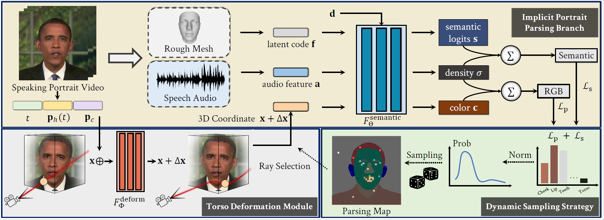

|
xAI Seattle, WA E-mail / CV / Google Scholar / Github / Twitter / LinkedIn |

|
Biography
I am a Member of Technical Staff at xAI, Grok Imagine Team, working on the Omni-model Pretraining and Visual Generation. Before that, I was a Research Scientist at NVIDIA Research, Cosmos Team. I obtained Bachelor's degree at Zhejiang University in 2021, and Ph.D. degree at The Chinese University of Hong Kong (CUHK), Multi-Media Laboratory (MMLab) in 2025.
My research interest lies in Multi-Modal AI and Foundation Generative Models, with focus on omni-model pre-training and post-training. I am the core contributor to xAI Grok Imagine, a leading image and video generation model. I am also core contributor to NVIDIA Cosmos series
 , an ensemble of open-source world foundation models and their post-trained variants.
, an ensemble of open-source world foundation models and their post-trained variants.
News
- [02/2026] Grok Imagine v1.0 is released on LMArena, with image ranking Top-3 and video ranking Top-1!
- [01/2026] Grok Imagine v1.0 Image and video generation released!
- [12/2025] Join xAI as Member of Technical Staff, working on Omni and Visual Generation models. Stay tuned for our release!
Product Release
|
|
Grok Imagine 1.0
Contributions: Grok Imagine Image.
|
Industrial Research

|
Cosmos: World Foundation Model Platform for Physical AI
Contributions: Auto-Regressive Foundation Model Pre-Training & Post-Training. (CES'25 Best of AI, Best Overall)
|

|
Cosmos 2.5: Improved World Simulation with Video Foundation Models for Physical AI
Contributions: Data Processing Pipelines, Captioning, Long Video Generation, Evaluation, Transfer Post-training.
|

|
Cosmos Tokenizer: A Suite of Image and Video Neural Tokenizers
Contributions: Continuous/Discrete Image/Video Tokenizers.
|
|
Cosmos-Transfer: World Generation with Adaptive Multimodal Control
Contributions: Adaptive Multi-Modal Control, Data Processing Pipelines, Open-Source Repo.
|
Selected Publications [ Full List ] (* indicates equal contribution)

|
HumanGaussian: Text-Driven 3D Human Generation with Gaussian Splatting
IEEE/CVF Conference on Computer Vision and Pattern Recognition (CVPR), 2024. (Highlight, Top 2.8%)
|

|
HyperHuman: Hyper-Realistic Human Generation with Latent Structural Diffusion
International Conference on Learning Representations (ICLR), 2024. (Review Score 6, 6, 8, 10, Top 1.6%, Rank)
|
|  |
Semantic-Aware Implicit Neural Audio-Driven Video Portrait Generation
European Conference on Computer Vision (ECCV), 2022. (Oral, Top 2.7%)
|

|
Audio-Driven Co-Speech Gesture Video Generation
Advances in Neural Information Processing Systems (NeurIPS), 2022. (Spotlight, Top 5%)
|

|
HMAR: Efficient Hierarchical Masked AutoRegressive Image Generation
IEEE/CVF Conference on Computer Vision and Pattern Recognition (CVPR), 2025.
|

|
TC4D: Trajectory-Conditioned Text-to-4D Generation
European Conference on Computer Vision (ECCV), 2024.
|
Working Experiences

Member of Technical Staff.
xAI, Omni Pretrain Team.
|

Research Scientist.
NVIDIA Research, Cosmos Team.
|
Internship Experiences
|
Generative AI Research Intern.
NVIDIA Research, Deep Imagination Group.
Supervisor: Ting-Chun Wang, Ming-Yu Liu.
|
Research Visiting Student.
UofT, Toronto Computational Imaging Group.
Host: Sherwin Bahmani, David B. Lindell.
|
|
|

|

Invited Talks
- The University of Hong Kong: Towards Multi-Modal Visual Generation: From Human Modeling to World Foundation Models. 2025
- Nanjing University: Towards Multi-Modal Visual Generation: From Human Modeling to World Foundation Models. 2025
- SenseTime: Towards Multi-Modal Visual Generation: From Human Modeling to World Foundation Models. 2025
- AI TIME: HyperHuman: Hyper-Realistic Human Generation with Latent Structural Diffusion. 2024
- AI TIME: Audio-Driven Co-Speech Gesture Video Generation. 2023
- TechBeat: Semantic-Aware Implicit Neural Audio-Driven Video Portrait Generation. 2022
Professional Services
- Area Chair / Senior Program Committee: AAAI.
- Conference Reviewer: CVPR, ECCV, ICCV, WACV, SIGGRAPH, SIGGRAPH Asia, ACL, NeurIPS, ICML, ICLR, AISTATS, AAAI, ACM MM.
- Journal Reviewer: TPAMI, IJCV, TVCG, TIP, TMM, EG, CGF, PG.
Selected Honors & Awards
- CNET 2025 Best of CES, Best of AI, and Best Overall. 2025
- ECCV Outstanding Reviewer Award. 2024
- CVPR Travel Award. 2024
- ICLR Travel Award. 2024
- National Scholarship. 2019, 2020
- Hong Kong Ph.D. Fellowship Scheme (HKPFS). 2021- 2025
- Outstanding Graduate of Zhejiang Province. 2021
- Outstanding Bachelor Thesis Award of Zhejiang University, Top 1%. 2021
- UCLA CSST Scholarship Program. 2020
- SenseTime Scholarship. 2020
- Tang Lixin Scholarship. 2019
- First Class Scholarship for Academic Excellence. 2019, 2020
Teaching Experience
- ENGG 1120, Linear Algebra for Engineers. Spring 2022.
- ENGG 2440, Discrete Mathematics for Engineers. Fall 2021.